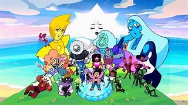

Hola, en este apartado les dareamos una breve introduccion a el muendo de "Steven Universe"

Premisa Principal
"Steven Universe" es una serie animada creada por Rebecca Sugar que sigue las aventuras de Steven
Universe, un niño mitad humano y mitad gema, y las Gemas de Cristal, un grupo de seres mágicos
que protegen la Tierra. La serie comienza con Steven aprendiendo sobre sus poderes y su herencia
gema, mientras se une a las Gemas de Cristal en la lucha contra Homeworld, una sociedad autoritaria
que busca controlar y colonizar otros planetas.
A lo largo de la serie, Steven y las Gemas de Cristal enfrentan diversas amenazas, exploran su
propia identidad y desarrollan relaciones significativas con otros personajes, incluyendo a Connie,
su mejor amiga y compañera de aventuras. La serie también explora temas profundos como la identidad,
la diversidad, la amistad y la aceptación personal, a través de historias emotivas y personajes
complejos.
La serie culmina con un evento épico en el que Steven descubre la verdad sobre su origen y se
enfrenta a una crisis que pone en peligro a la Tierra y a sus seres queridos. Con la ayuda de
sus amigos y aliados, Steven logra superar este desafío y alcanzar un nuevo nivel de comprensión
y poder.
Además de la serie principal, "Steven Universe" también cuenta con una película titulada "Steven
Universe: La Película", que sigue la historia después de los eventos de la serie y presenta a un
nuevo antagonista que amenaza la paz en la Tierra. La película explora temas de perdón, redención
y crecimiento personal, mientras Steven y las Gemas de Cristal se unen para enfrentar esta nueva
amenaza y proteger lo que más valoran.
En resumen, "Steven Universe" es una serie que combina aventuras emocionantes, mensajes poderosos
y personajes entrañables, creando una experiencia única y significativa para los espectadores de
todas las edades.